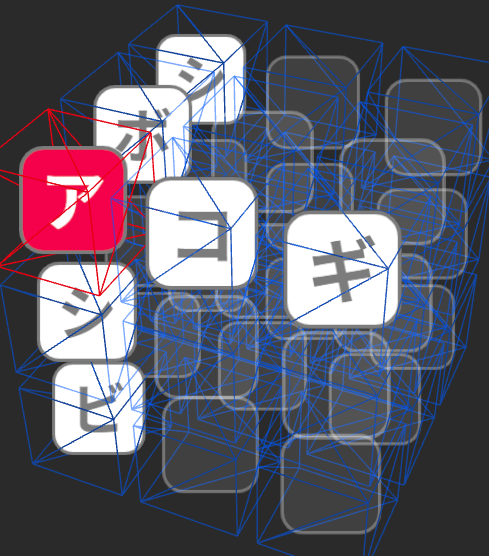
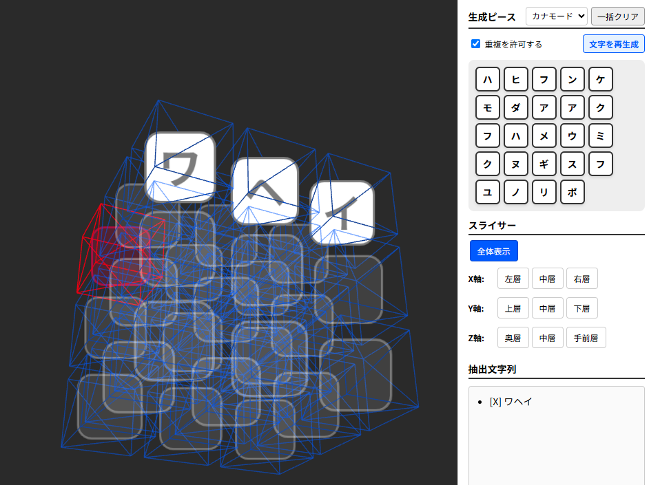

3Dパズル言葉遊び『WordCube』を作った話

制作のきっかけ
言葉遊びコミュニティ『ピーコロン』で行われた3周年記念イベントで、「ランダムに選ばれた9文字を3×3に組み合わせ、縦横6列に意味の通る言葉を作る」というお題が出ました。
私自身は他のお題に関わっていたのでこれ自体には参加していないのですが、解決後に「今度は3Dで27列にやらせるのではないか」という、恐らく冗談半分の投稿が飛び出しました。
どうも面白そうだと感じた私は、持ち前のバイブコーディングによる高速プロトタイピングで、3D化プロトタイプを作ることにしました。
こだわった点・工夫した点
- ピーコロンユーザーのストイックな言葉遊びに応える
『ピーコロン』のユーザーは言葉遊びに対して非常にストイックです。そのため、単なる文字入れパズルキューブではなく、高度な縛りプレイを含めた多様なプレイスタイルに対応できるよう、設定項目を細かくしました。
具体的には、ランダム排出される文字の被りを許容するか否か、ランダム排出される文字がカタカナか常用漢字か、などの設定を用意しました。また、ランダム排出ではなく、任意の文字を入力して遊ぶことも可能として、「この配置なら実現できるよね！」の図示にも役立ててもらうことを想定しました。

振り返り・学び
「1時間で開発してやる」と息巻いた本制作でしたが、イベントの最中に隙間時間で進めたこともあり、結局開発には5時間を要すこととなりました。
その頃にはすっかり熱狂も冷めており、ユーザーの目に留まることはそれほどありませんでした。
また、プレイ自体の高難易度さも相まって、挑戦の表明は出ましたがクリア報告は上がっていません。
設計を細かく詰めすぎたかなと考えていますので、次回は早々に作り始めながら、気になった点を随時改善していく、というスタイルで開発を高速化していきたいです。